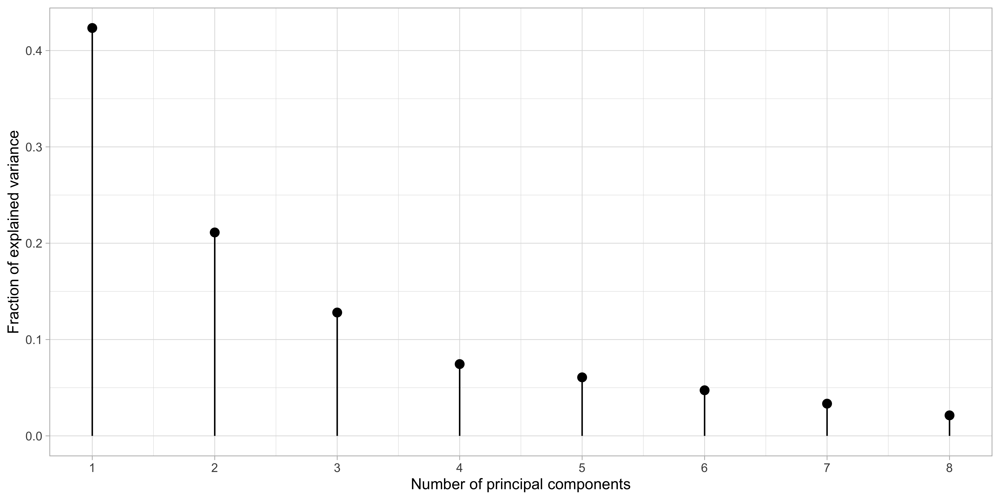

Rows: 97
Columns: 10
$ lcavol <dbl> -0.5798185, -0.9942523, -0.5108256, -1.2039728, 0.7514161, -1.…
$ lweight <dbl> 2.769459, 3.319626, 2.691243, 3.282789, 3.432373, 3.228826, 3.…
$ age <int> 50, 58, 74, 58, 62, 50, 64, 58, 47, 63, 65, 63, 63, 67, 57, 66…
$ lbph <dbl> -1.3862944, -1.3862944, -1.3862944, -1.3862944, -1.3862944, -1…
$ svi <int> 0, 0, 0, 0, 0, 0, 0, 0, 0, 0, 0, 0, 0, 0, 0, 0, 0, 0, 0, 0, 0,…
$ lcp <dbl> -1.3862944, -1.3862944, -1.3862944, -1.3862944, -1.3862944, -1…
$ gleason <int> 6, 6, 7, 6, 6, 6, 6, 6, 6, 6, 6, 6, 7, 7, 7, 6, 7, 6, 6, 6, 6,…
$ pgg45 <int> 0, 0, 20, 0, 0, 0, 0, 0, 0, 0, 0, 0, 30, 5, 5, 0, 30, 0, 0, 0,…
$ lpsa <dbl> -0.4307829, -0.1625189, -0.1625189, -0.1625189, 0.3715636, 0.7…
$ train <lgl> TRUE, TRUE, TRUE, TRUE, TRUE, TRUE, FALSE, TRUE, FALSE, FALSE,…Shrinkage and variable selection
Data Mining - CdL CLAMSES
Homepage

In this unit we will cover the following topics:
- Best subset regression
- Principal component regression
- Ridge regression
- Lasso, LARS, elastic-net
The common thread among these topics is the so-called variable selection problem.
The issue we face is the presence of several potentially irrelevant variables among the covariates.
In the extreme case p > n, is there even hope that we can fit a useful model?
The prostate dataset
The
prostatecancer data investigates the relationship between the prostate-specific antigen and a number of clinical measures, in men about to receive a prostatectomy.We want to predict the logarithm of a prostate-specific antigen (
lpsa) as a function of:- logarithm of the cancer volume (
lcavol); - logarithm of the prostate weight (
lweight); - age each man (
age); - logarithm of the benign prostatic hyperplasia amount (
lbph); - seminal vesicle invasion (
svi), a binary variable; - logarithm of the capsular penetration (
lcp); - Gleason score (
gleason), an ordered categorical variable; - Percentage of Gleason scores 4 and 5 (
pgg45).
- logarithm of the cancer volume (
A glimpse of the prostate dataset
- The dataset is available online. A description is given in Section 3.2.1 of HTF (2009).
There are in total 8 variables that can be used to predict the antigen
lpsa.The variable
trainsplits the data into a training and test set, as in the textbook.There are n = 67 observations in the training set and 30 in the test set.
Correlation matrix of prostate

The variable selection problem
We consider a linear model in which the response variable Y_i (
lpsa) is related to the covariates through the function f(\bm{x}_i; \beta_0, \beta) = \beta_0+ \beta_1 x_{i1} + \cdots + \beta_p x_{ip} =\beta_0 + \bm{x}_i^T\beta. In this unit the intercept \beta_0 will play a special role, therefore we use a slightly different notation compared to Unit A.1.If we use all the p = 8 available covariates, the estimated f(\bm{x}; \hat{\beta_0}, \hat{\beta}) might have a high variance, without important gain in term of bias, i.e. a large mean squared error.
Indeed, some variables are likely to be irrelevant:
- they might be correlated with other covariates and therefore redundant;
- they could be uncorrelated with the response
lpsa.
Hence, we are looking for a simpler model having hopefully a lower mean squared error.
A naïve approach: (ab)using p-values
| (Intercept) | lcavol | lweight | age | lbph | svi | lcp | gleason | pgg45 | |
|---|---|---|---|---|---|---|---|---|---|
| estimate | 2.46 | 0.68 | 0.26 | -0.14 | 0.21 | 0.31 | -0.29 | -0.02 | 0.27 |
| std.error | 0.09 | 0.13 | 0.10 | 0.10 | 0.10 | 0.12 | 0.15 | 0.15 | 0.15 |
| statistic | 27.60 | 5.37 | 2.75 | -1.40 | 2.06 | 2.47 | -1.87 | -0.15 | 1.74 |
| p.value | 0.00 | 0.00 | 0.01 | 0.17 | 0.04 | 0.02 | 0.07 | 0.88 | 0.09 |
It is a common practice to use the p-values, e.g. those obtained through the
summaryfunction, to perform model selection in a stepwise fashion.A typical procedure is to omit “non significant” coefficients, refit the model, and repeat this scheme until we obtain only “significant” coefficients.
This is not the best idea, at least without careful thinking and appropriate multiplicity corrections.
In the first place, the p-values in the above table are meant to be used in the context of a single hypothesis testing problem, not to make several iterative choices.
Such an iterative usage of p-values is formally incorrect because it leads to the well-known multiple testing problem, which would require suitable corrections.
A predictive perspective
- “All models are approximations. Essentially, all models are wrong, but some are useful.” George E.P. Box
There is another important reason for avoiding p-values. If the focus is just on prediction, we do not necessarily care about selecting the “true” set of parameters.
In many data mining problems, the focus is on the minimization of the prediction errors.
Hence, often times we may accept some bias (i.e. we use a “wrong” but useful model), if this leads to a reduction in variance.
Besides, in certain cases it does not even make much sense to speak about the “true parameters”.
For example, what if the true f(\bm{x}) were not linear? In this context, a linear model is simply an approximation of the unknown f(\bm{x}) and hypothesis testing procedures are ill-posed.
Best subset selection
Instead of choosing the optimal model using p-values, a more principled approach is based on the tools of Unit B.
Ideally, we could perform an exhaustive search considering all the 2^p possible models and then picking the one having the best out-of-sample predictive performance.
- By construction, a model with more variables \text{MSE}_{k + 1, \text{train}} \le \text{MSE}_{k, \text{train}} has lower training error. Hence, the optimal subset size k is chosen e.g. via cross-validation.
Step 1. and 2. of best subset selection

Step 3. of best subset selection via cross-validation

Forward and backward regression
Forward and backward regression

Comments
Principal components
Principal component analysis
Principal components regression
Attaching package: 'pls'The following object is masked from 'package:stats':
loadingsPCR

A summary and next directions
| Shrinkage | Variable selection | |
|---|---|---|
| Discrete | Principal component regression | Best subset selection |
| Continuous | Ridge regression | Lasso |
Comments and computational considerations